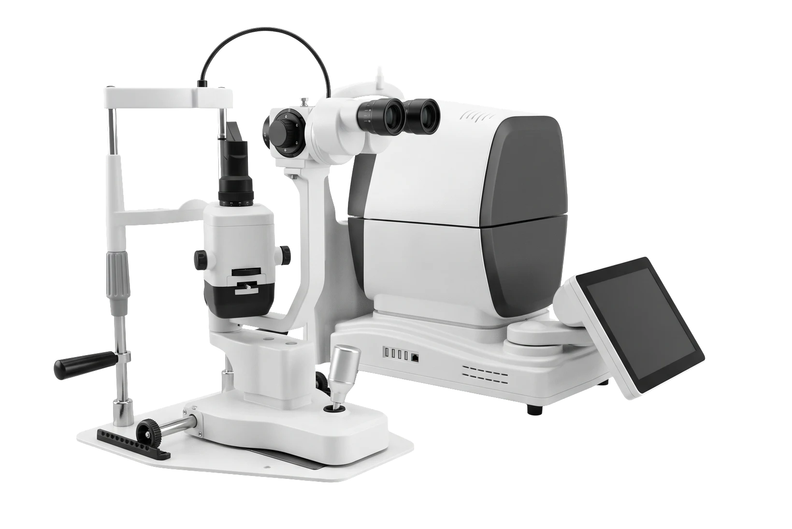
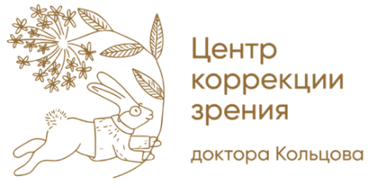
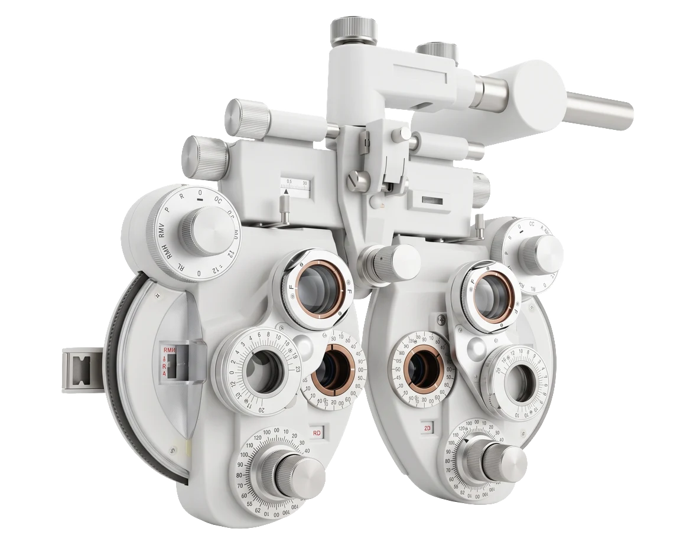
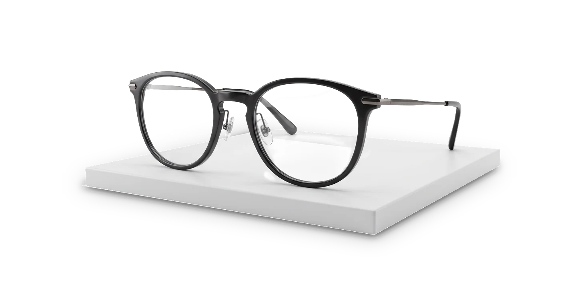
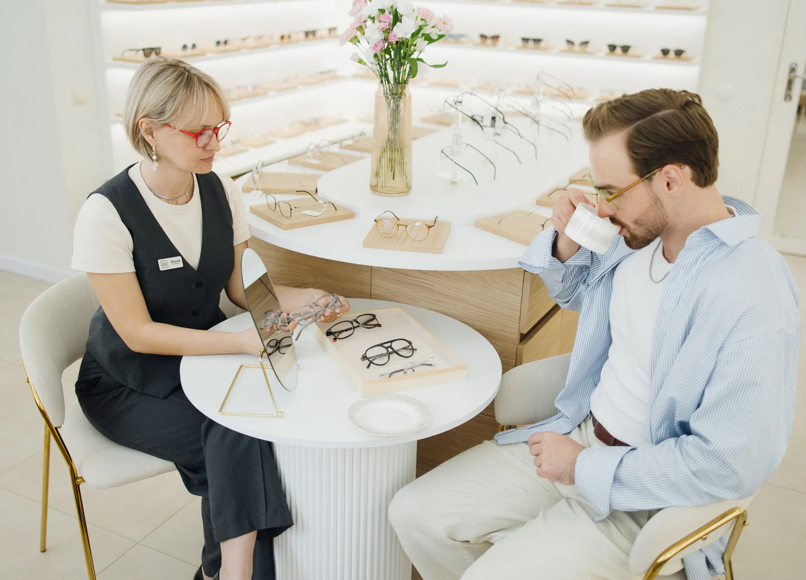
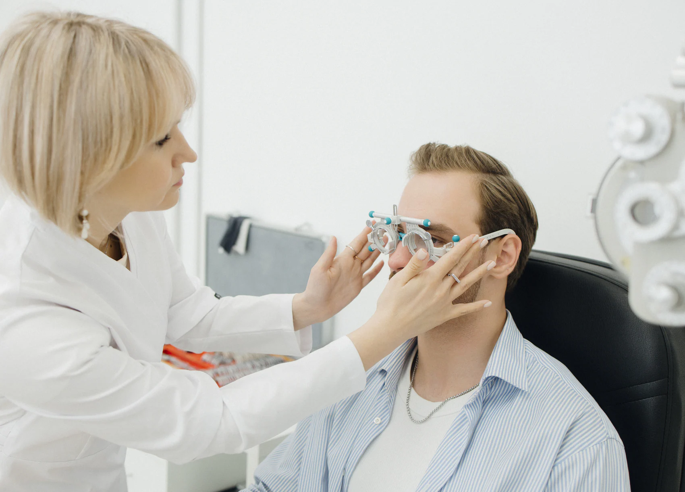
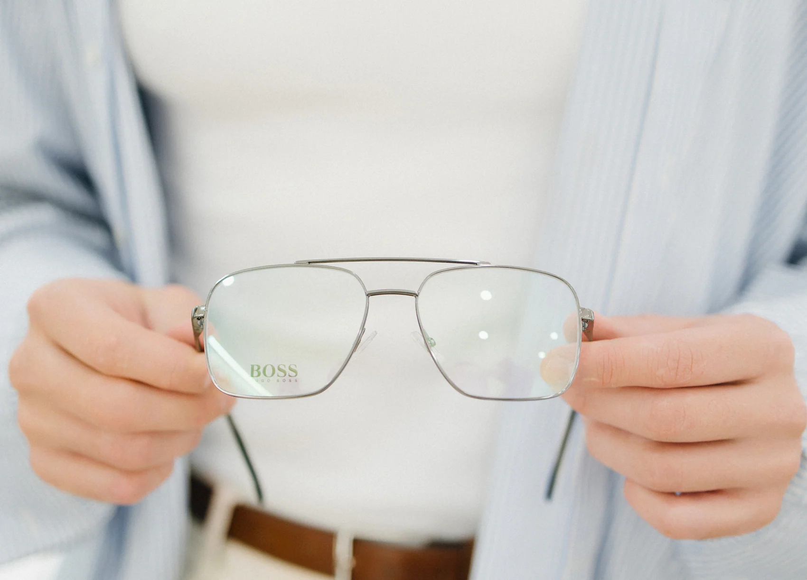

01 / 03
Глубокая диагностика зрения
Проверяем, как глаза работают вместе: бинокулярное зрение, мышечный баланс, аккомодацию. Дискомфорт в очках часто прячется именно здесь, а не в диоптриях.


+7 950 024 11 77 ЗаписатьсяЦентр коррекции зрения доктора Кольцова — Санкт-ПетербургЦентр коррекции зрения доктора Кольцова
Подбор очков у врача-офтальмолога и оптометристов —
от обычных случаев до самых сложных.
Центр доктора Кольцова
Сюда приходят и просто за новыми очками, и после подборов, которые не получились в других местах. Мы начинаем с диагностики — и не отпускаем, пока вам не станет комфортно.
О центре
В клинике сильная медицина, но очки подбирают «как получится». В салоне красивые оправы, но слабый подбор. У нас одно продолжает другое.
Врач и оптика под одной крышей: обследование, рецепт и очки делает одна команда, которая отвечает за результат. Вы уходите с очками, в которых комфортно весь день.
Проверяем, как глаза работают вместе: бинокулярное зрение, мышечный баланс, аккомодацию. Дискомфорт в очках часто прячется именно здесь, а не в диоптриях.

Учитываем посадку, расстояние от линзы до глаза, угол наклона и положение центров линз. От этого зависит, будет ли рецепт работать так, как задумано.

Оправы без логомании — за материалы и посадку. Светлый зал под сводами, кофе и консультант, который не торопит.

С чем к нам обращаются
Как проходит подбор

01/06
Разговор о ваших задачах
Расскажите, где и как вам неудобно, какие очки были раньше и чем вы заняты днём. Возьмите с собой старые очки и рецепты.
02/06
Полное обследование зрения
Рефракция, острота зрения, бинокулярные функции и мышечный баланс глаз — не только «какую строчку видите».

03/06
В пробной оправе
Проверяем рецепт в пробной оправе: вдаль, вблизи, на ходу. Объясняем, что увидели и почему рецепт именно такой.
04/06
Оправа и линзы
Подбираем оправу под лицо, образ жизни и вашу коррекцию, а линзы — под задачи: офис, руль, чтение.

05/06
Сборка и проверка
Собираем очки, проверяем их на соответствие рецепту и подгоняем посадку под вас.
06/06
Контроль через 14 дней
Через 14 дней звоним сами. Если к очкам сложно привыкнуть — приглашаем на контроль и ищем решение.
Готовы
начать?
Врач-офтальмолог · основатель центра
Берётся за случаи, в которых другим не удалось помочь, — и учит этому других врачей.
Отзывы
Да. Большинство гостей приходят именно с этим: обновить рецепт, подобрать очки для чтения или работы. Сложные случаи — наша специализация, но не условие.
Большинству подойдёт оптометрист. Сложные случаи — двоение, косоглазие, призмы, неудачный опыт с очками — к главному врачу. Сомневаетесь — напишите, подскажем.
Лучше записаться: на каждого гостя мы закладываем 1–1,5 часа, и в этот день вас никто не будет торопить. Если вы уже рядом — позвоните, проверим, есть ли свободное окно.
Закладываем около 1–1,5 часа, чтобы никуда не спешить. Возьмите очки, которые носите сейчас, старые рецепты и выписки, если есть.
Можно. Рецепт перед изготовлением мы перепроверим, а оправу оценим по посадке: если она подходит под коррекцию, поставим в неё новые линзы.
Да. Офисные линзы — монитор, документы и собеседник в одних очках; очки для водителей — чёткая дорога и приборная панель. Подбираем под ваше рабочее расстояние и привычки.
Зависит от линз: простые делаем быстрее, сложные — прогрессивные, с призмами — изготавливаются под заказ. Точный срок назовём на приёме, когда будет понятен рецепт.
Через 14 дней мы звоним сами. Если есть дискомфорт — приглашаем на контроль, разбираем причину и меняем решение.
Да: подбираем первые очки и помогаем контролировать близорукость. Детей ведёт главный врач.
Диагностику и подбор проводим за один визит. Напишите заранее — подберём время и расскажем про сроки изготовления и доставку.
Специалисты и цены
Главный врач · офтальмолог
Приём врача-офтальмолога
Оптометрист
Диагностика и подбор очков
Оптометрист
Диагностика и подбор очков
Жизнь центра